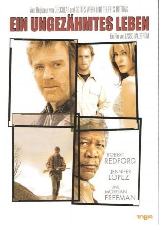

#1935 Ein Ungezähmtes Leben
Alternativ: An Unfinished Life
 
 IMDB-Wertung: 7.0 / 10
IMDB-Wertung: 7.0 / 10  Metascore: 49
Metascore: 49 
Jean und ihre Tochter Griff müssen vorübergehend bei Jeans Schwiegervater wohnen, da ihr Freund sie geschlagen hat. Doch Einar schürt seit dem Tode seines Sohnes einen riesigen Hass auf Jean... Bewegendes Drama von Lasse Hallström mit Robert Redford, Jennifer Lopez und Morgan Freeman in den Hauptrollen.
Jahr: 2005
Dauer: 108 Minuten
FSK: 6
Land: USA Studio: MiramaxTonspuren: DTS - ,
Untertitel:
Auflösung: 1080p (1920x800) Größe: 6563 MB
Genre: Drama
Regisseur: Lasse Hallström
Drehbuch: Mark Spragg, Virginia Korus Spragg
Soundtrack: Deborah Lurie
Darsteller:
 Robert Redford als Einar Gilkyson
Robert Redford als Einar Gilkyson Jennifer Lopez als Jean Gilkyson
Jennifer Lopez als Jean Gilkyson Morgan Freeman als Mitch Bradley
Morgan Freeman als Mitch Bradley Josh Lucas als Crane Curtis
Josh Lucas als Crane Curtis Damian Lewis als Gary Winston
Damian Lewis als Gary Winston Camryn Manheim als Nina
Camryn Manheim als Nina- Becca Gardner als Griff Gilkyson
 Lynda Boyd als Kitty
Lynda Boyd als Kitty- Rob Hayter als Deputy
 Jason Diablo als Customer #1
Jason Diablo als Customer #1 Jill Teed als Bartender
Jill Teed als Bartender Bart the Bear als The Bear
Bart the Bear als The Bear- Kerry Wynnyk als Hospital Visitor , uncredited
 P. Lynn Johnson als Shelter Supervisor
P. Lynn Johnson als Shelter Supervisor- Byron Lucas als Motorcycle Rider
- Trevor Moss als Griffin Gilkyson
- R. Nelson Brown als Kent
- Dillard Brinson als Gnome Owner
- Sean J. Dory als Customer #2
- Bryan Korenberg als Angry Couple Man
- Bonnie Barton als Angry Couple Woman
- Danielle Dunn-Morris als Angie
- Sandra Polson als Secretary
- Dale Kipling als Cook
- Jayne Dancose als Nurse Phyllis
- Ken Camroux als Doctor
Datei: X:\2005(N-Z)\Ungezähmtes Leben, Ein (2005, FSK6, 1920x800).mkv seit 05.09.2015
Festplatte: HD 2005(G-Z)-2006(A-Z)
 Es gibt insgesamt 50 Filme in der Gruppe '2005(N-Z)'
Es gibt insgesamt 50 Filme in der Gruppe '2005(N-Z)'